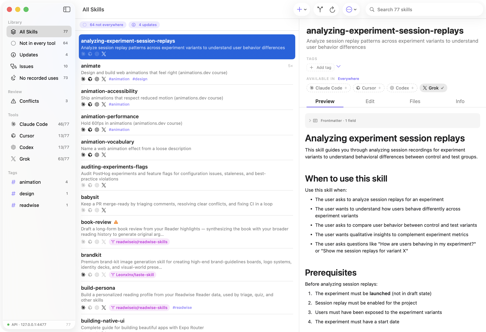

Free & open source (MIT) · macOS 14+ · auto-updates built in · signed & notarized

Features
The full lifecycle, in one app.
Skills scatter: copies drift, updates slip by, nothing syncs. Skill Library replaces the sprawl with one store every tool reads from.
One store, every tool
All skills live in a single git repo. Each tool's skill directory becomes symlinks into it — edit once, every tool sees it instantly.
Create & edit
⌘N scaffolds a well-formed skill; a rendered preview and raw editor keep SKILL.md honest. ⌘K fuzzy-jumps across hundreds of skills.
Install from GitHub
Point at any repo with SKILL.md folders, cherry-pick what you want, and install with provenance — updates stay one click away.
Tags, not folders
Group skills your way: tag from the header, drag skills onto sidebar tags, filter instantly, bulk-tag whole selections.
Updates with diffs
Skill Library watches skills' source repos and shows exactly what changed before you update. Local edits are guarded, and the app updates itself too.
Skill doctor
Broken frontmatter, dead links, oversized files that tax your context window — found automatically, listed plainly, one smart group away.
Drift & conflicts
If a tool's copy diverges, you get a badge, a diff, and a one-click resolution. Every change is backed up first; git history keeps everything.
Sync across machines
The store is a plain git repo. Push it to GitHub, clone on another Mac, run adopt — done.
Agents read — and write
A local API lets any model query your live catalog, and agents can propose new skills into a review inbox. You approve; they never write directly.
Architecture
One canonical copy, symlinked everywhere.
~/ai-skills
# one canonical store, symlinked everywhere
~/ai-skills/skills/<name>/SKILL.md ← the only copy
~/.claude/skills/<name> → symlink
~/.cursor/skills/<name> → symlink
~/.codex/skills/<name> → symlink
~/.config/opencode/skills/… → symlink
~/.gemini/skills/<name> → symlink
~/.kiro/skills/<name> → symlink
Because the store is a normal git repository, edits are instant everywhere, history is free, and machines sync with a push and a pull. On a machine without Skill Library, it degrades gracefully to plain folders.
For agents
Your models see the live catalog.
A localhost-only API plus an auto-installed meta-skill means any model can look up your current skills — no stale listings.
skill library api · 127.0.0.1:4477
$ curl -s http://127.0.0.1:4477/skills
{ "skills": [ { "name": "animate", "tools": ["claude","cursor","codex"], … } ] }
$ curl -s http://127.0.0.1:4477/skills/animate
{ "name": "animate", "skillMd": "---\nname: animate\n…", "files": [ … ] }# agents can even propose new skills — they land in your review inbox:
$ curl -s -X POST http://127.0.0.1:4477/skills -d '{"name": "…", "skillMd": "…"}'
{ "status": "pending-review" }